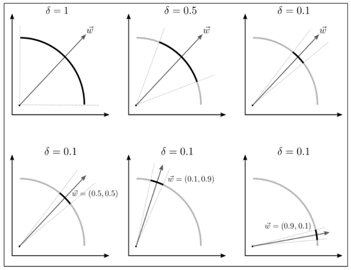

Multi-Criteria Decision-Making
A set of Multi-Criteria Decision Making (MCDM) methods is available in Metaheuristics.jl.
Firstly, it is recommended to read the details of the following two functions.
Metaheuristics.decisionmaking — Function
decisionmaking(fs, w, method)Perform selected method for a given fs and weight vector(s) and return the indices indicating the best alternative(s). Here, fs can be a set of non-dominated solutions (population) or a State.
Metaheuristics.best_alternative — Function
best_alternative(res, w, method)Perform McDM using results from metaheuristic and return best alternative in res.population.
Example
julia> f, bounds, _ = Metaheuristics.TestProblems.ZDT1();
julia> res = optimize(f, bounds, NSGA2());
julia> best_sol = best_alternative(res, [0.5, 0.5], TopsisMethod())
(f = [0.32301132058506055, 0.43208538139854685], g = [0.0], h = [0.0], x = [3.230e-01, 1.919e-04, …, 1.353e-04])best_alternative(population, w, method)Perform method and return the best alternative(s) in population.
Currently available methods are listed in the following table.
| Method | Strategies | Preferences | Dependency |
|---|---|---|---|
CompromiseProgramming | S | W/D | |
ROIArchiving | M | D | |
ArasMethod | S | W | JMcDM |
CocosoMethod | S | W | JMcDM |
CodasMethod | S | W | JMcDM |
CoprasMethod | S | W | JMcDM |
EdasMethod | S | W | JMcDM |
ElectreMethod | M | W | JMcDM |
GreyMethod | S | W | JMcDM |
MabacMethod | S | W | JMcDM |
MaircaMethod | S | W | JMcDM |
MooraMethod | S | W | JMcDM |
SawMethod | S | W | JMcDM |
TopsisMethod | S | W | JMcDM |
VikorMethod | S | W | JMcDM |
WPMMethod | S | W | JMcDM |
WaspasMethod | S | W | JMcDM |
MarcosMethod | S | W | JMcDM |
ROVMethod | S | W | JMcDM |
A Method can suggest Single (S) or Multiple (M) Strategies. Also, Methods can represent Preferences by using weight vectors (W), reference directions (D) or reference points (P).
JMcDM
JMcDM is a package for MCDM developed by (Satman et al., 2021). Many methods have been implemented there, and many of them have been interfaced here.
The main method to use JMcDM within Metaheuristics is described as follows.
mcdm(data, w, method)Perform selected method for a given data and weight vector w. Here, data can be a set of non-dominated solutions (population), a State or a decision Matrix.
Also, method can be selected from JMcDM package.
Supported MCDM methods:
ArasMethodCocosoMethodCodasMethodCoprasMethodEdasMethodElectreMethodGreyMethodMabacMethodMaircaMethodMooraMethodSawMethodTopsisMethod(default method)VikorMethodWPMMethodWaspasMethodMarcosMethodROVMethod
See the JMcDM documentation for more details about the methods.
Example 1:
Performing MCDM using a population.
julia> _, _, population = Metaheuristics.TestProblems.ZDT1();
julia> dm = mcdm(population, [0.5, 0.5], TopsisMethod());
julia> population[dm.bestIndex]
(f = [0.5353535353535354, 0.2683214262030523], g = [0.0], h = [0.0], x = [5.354e-01, 0.000e+00, …, 0.000e+00])Example 2:
Performing MCDM using results from metaheuristic.
julia> f, bounds, _ = Metaheuristics.TestProblems.ZDT1();
julia> res = optimize(f, bounds, NSGA2());
julia> dm = mcdm(res, [0.5, 0.5], TopsisMethod());
julia> res.population[dm.bestIndex]
(f = [0.32301132058506055, 0.43208538139854685], g = [0.0], h = [0.0], x = [3.230e-01, 1.919e-04, …, 1.353e-04])Selecting best alternative
best_alternative(res, w, method)Perform McDM using results from metaheuristic and return the best alternative in res.population.
julia> f, bounds, _ = Metaheuristics.TestProblems.ZDT1();
julia> res = optimize(f, bounds, NSGA2());
julia> best_sol = best_alternative(res, [0.5, 0.5], TopsisMethod())
(f = [0.32301132058506055, 0.43208538139854685], g = [0.0], h = [0.0], x = [3.230e-01, 1.919e-04, …, 1.353e-04])Region of Interest Archiving
ROIArchiving uses a set of reference directions to determine the areas of interest of the Pareto Front and a set of thresholds associated with each component from the reference directions, which determine the boundaries of the area of interest being covered. See (de-la-Cruz-Martínez et al., 2022).

Metaheuristics.ROIArchiving — Type
ROIArchiving(δ_w)It can be used as a posteriori decision-making criteria applied to the Pareto front found by a metaheuristic when solved a constrained multi-objective problem.
ROIArchiving can handle multiple weight points and corresponding thresholds δ_w. Note 0 <= δ_w[i] <= 1 indicates the size of region of interest, e.g., δ_w[i] = 0.51 means that you want 51% of the Pareto front solutions close to w[i].
Example
julia> f, bounds, pf = Metaheuristics.TestProblems.ZDT1();
julia> res = optimize(f, bounds, NSGA2()); # find Pareto front
julia> ws = [0.1 0.9; 0.9 0.1]; # weight points by rows.
julia> # 10% of solutions closest to the corresponding w[i]
julia> method = ROIArchiving([0.1, 0.1]); # 10% of solutions closest to the corresponding w[i].
julia> subpop = best_alternative(res, ws, method)
⠀⠀⠀⠀⠀⠀⠀⠀⠀⠀⠀⠀⠀⠀⠀⠀⠀⠀F space⠀⠀⠀⠀⠀⠀⠀⠀⠀⠀⠀⠀⠀⠀⠀⠀⠀
┌────────────────────────────────────────┐
0.9 │⠀⠀⠀⠀⠀⠀⠀⠀⠀⠀⠀⠀⠀⠀⠀⠀⠀⠀⠀⠀⠀⠀⠀⠀⠀⠀⠀⠀⠀⠀⠀⠀⠀⠀⠀⠀⠀⠀⠀⠀│
│⠀⢣⠀⠀⠀⠀⠀⠀⠀⠀⠀⠀⠀⠀⠀⠀⠀⠀⠀⠀⠀⠀⠀⠀⠀⠀⠀⠀⠀⠀⠀⠀⠀⠀⠀⠀⠀⠀⠀⠀│
│⠀⠀⢣⠀⠀⠀⠀⠀⠀⠀⠀⠀⠀⠀⠀⠀⠀⠀⠀⠀⠀⠀⠀⠀⠀⠀⠀⠀⠀⠀⠀⠀⠀⠀⠀⠀⠀⠀⠀⠀│
│⠀⠀⠀⠑⡄⠀⠀⠀⠀⠀⠀⠀⠀⠀⠀⠀⠀⠀⠀⠀⠀⠀⠀⠀⠀⠀⠀⠀⠀⠀⠀⠀⠀⠀⠀⠀⠀⠀⠀⠀│
│⠀⠀⠀⠀⠈⠀⠀⠀⠀⠀⠀⠀⠀⠀⠀⠀⠀⠀⠀⠀⠀⠀⠀⠀⠀⠀⠀⠀⠀⠀⠀⠀⠀⠀⠀⠀⠀⠀⠀⠀│
│⠀⠀⠀⠀⠀⠀⠀⠀⠀⠀⠀⠀⠀⠀⠀⠀⠀⠀⠀⠀⠀⠀⠀⠀⠀⠀⠀⠀⠀⠀⠀⠀⠀⠀⠀⠀⠀⠀⠀⠀│
│⠀⠀⠀⠀⠀⠀⠀⠀⠀⠀⠀⠀⠀⠀⠀⠀⠀⠀⠀⠀⠀⠀⠀⠀⠀⠀⠀⠀⠀⠀⠀⠀⠀⠀⠀⠀⠀⠀⠀⠀│
f₂ │⠀⠀⠀⠀⠀⠀⠀⠀⠀⠀⠀⠀⠀⠀⠀⠀⠀⠀⠀⠀⠀⠀⠀⠀⠀⠀⠀⠀⠀⠀⠀⠀⠀⠀⠀⠀⠀⠀⠀⠀│
│⠀⠀⠀⠀⠀⠀⠀⠀⠀⠀⠀⠀⠀⠀⠀⠀⠀⠀⠀⠀⠀⠀⠀⠀⠀⠀⠀⠀⠀⠀⠀⠀⠀⠀⠀⠀⠀⠀⠀⠀│
│⠀⠀⠀⠀⠀⠀⠀⠀⠀⠀⠀⠀⠀⠀⠀⠀⠀⠀⠀⠀⠀⠀⠀⠀⠀⠀⠀⠀⠀⠀⠀⠀⠀⠀⠀⠀⠀⠀⠀⠀│
│⠀⠀⠀⠀⠀⠀⠀⠀⠀⠀⠀⠀⠀⠀⠀⠀⠀⠀⠀⠀⠀⠀⠀⠀⠀⠀⠀⠀⠀⠀⠀⠀⠀⠀⠀⠀⠀⠀⠀⠀│
│⠀⠀⠀⠀⠀⠀⠀⠀⠀⠀⠀⠀⠀⠀⠀⠀⠀⠀⠀⠀⠀⠀⠀⠀⠀⠀⠀⠀⠀⠀⠀⠀⠀⠀⠀⠀⠀⠀⠀⠀│
│⠀⠀⠀⠀⠀⠀⠀⠀⠀⠀⠀⠀⠀⠀⠀⠀⠀⠀⠀⠀⠀⠀⠀⠀⠀⠀⠀⠀⠀⠀⣀⠀⠀⠀⠀⠀⠀⠀⠀⠀│
│⠀⠀⠀⠀⠀⠀⠀⠀⠀⠀⠀⠀⠀⠀⠀⠀⠀⠀⠀⠀⠀⠀⠀⠀⠀⠀⠀⠀⠀⠀⠀⠉⠁⠠⠄⠀⠀⠀⠀⠀│
0 │⠀⠀⠀⠀⠀⠀⠀⠀⠀⠀⠀⠀⠀⠀⠀⠀⠀⠀⠀⠀⠀⠀⠀⠀⠀⠀⠀⠀⠀⠀⠀⠀⠀⠀⠀⠈⠑⠂⠀⠀│
└────────────────────────────────────────┘
⠀0⠀⠀⠀⠀⠀⠀⠀⠀⠀⠀⠀⠀⠀⠀⠀⠀⠀⠀⠀⠀⠀⠀⠀⠀⠀⠀⠀⠀⠀⠀⠀⠀⠀⠀⠀⠀⠀⠀1⠀
⠀⠀⠀⠀⠀⠀⠀⠀⠀⠀⠀⠀⠀⠀⠀⠀⠀⠀⠀⠀f₁⠀⠀⠀⠀⠀⠀⠀⠀⠀⠀⠀⠀⠀⠀⠀⠀⠀⠀⠀⠀
julia> res.population # all solutions
⠀⠀⠀⠀⠀⠀⠀⠀⠀⠀⠀⠀⠀⠀⠀⠀⠀⠀F space⠀⠀⠀⠀⠀⠀⠀⠀⠀⠀⠀⠀⠀⠀⠀⠀⠀
┌────────────────────────────────────────┐
1.1 │⠀⠀⠀⠀⠀⠀⠀⠀⠀⠀⠀⠀⠀⠀⠀⠀⠀⠀⠀⠀⠀⠀⠀⠀⠀⠀⠀⠀⠀⠀⠀⠀⠀⠀⠀⠀⠀⠀⠀⠀│
│⠂⠀⠀⠀⠀⠀⠀⠀⠀⠀⠀⠀⠀⠀⠀⠀⠀⠀⠀⠀⠀⠀⠀⠀⠀⠀⠀⠀⠀⠀⠀⠀⠀⠀⠀⠀⠀⠀⠀⠀│
│⡃⠀⠀⠀⠀⠀⠀⠀⠀⠀⠀⠀⠀⠀⠀⠀⠀⠀⠀⠀⠀⠀⠀⠀⠀⠀⠀⠀⠀⠀⠀⠀⠀⠀⠀⠀⠀⠀⠀⠀│
│⠘⡄⠀⠀⠀⠀⠀⠀⠀⠀⠀⠀⠀⠀⠀⠀⠀⠀⠀⠀⠀⠀⠀⠀⠀⠀⠀⠀⠀⠀⠀⠀⠀⠀⠀⠀⠀⠀⠀⠀│
│⠀⠈⢆⠀⠀⠀⠀⠀⠀⠀⠀⠀⠀⠀⠀⠀⠀⠀⠀⠀⠀⠀⠀⠀⠀⠀⠀⠀⠀⠀⠀⠀⠀⠀⠀⠀⠀⠀⠀⠀│
│⠀⠀⠈⠑⡄⠀⠀⠀⠀⠀⠀⠀⠀⠀⠀⠀⠀⠀⠀⠀⠀⠀⠀⠀⠀⠀⠀⠀⠀⠀⠀⠀⠀⠀⠀⠀⠀⠀⠀⠀│
│⠀⠀⠀⠀⠈⠢⣄⠀⠀⠀⠀⠀⠀⠀⠀⠀⠀⠀⠀⠀⠀⠀⠀⠀⠀⠀⠀⠀⠀⠀⠀⠀⠀⠀⠀⠀⠀⠀⠀⠀│
f₂ │⠀⠀⠀⠀⠀⠀⠈⠓⢢⡀⠀⠀⠀⠀⠀⠀⠀⠀⠀⠀⠀⠀⠀⠀⠀⠀⠀⠀⠀⠀⠀⠀⠀⠀⠀⠀⠀⠀⠀⠀│
│⠀⠀⠀⠀⠀⠀⠀⠀⠀⠈⠒⢄⡀⠀⠀⠀⠀⠀⠀⠀⠀⠀⠀⠀⠀⠀⠀⠀⠀⠀⠀⠀⠀⠀⠀⠀⠀⠀⠀⠀│
│⠀⠀⠀⠀⠀⠀⠀⠀⠀⠀⠀⠀⠀⠑⠆⣄⡀⠀⠀⠀⠀⠀⠀⠀⠀⠀⠀⠀⠀⠀⠀⠀⠀⠀⠀⠀⠀⠀⠀⠀│
│⠀⠀⠀⠀⠀⠀⠀⠀⠀⠀⠀⠀⠀⠀⠀⠀⠈⠐⠠⣀⠀⠀⠀⠀⠀⠀⠀⠀⠀⠀⠀⠀⠀⠀⠀⠀⠀⠀⠀⠀│
│⠀⠀⠀⠀⠀⠀⠀⠀⠀⠀⠀⠀⠀⠀⠀⠀⠀⠀⠀⠀⠉⠂⠢⠄⡀⠀⠀⠀⠀⠀⠀⠀⠀⠀⠀⠀⠀⠀⠀⠀│
│⠀⠀⠀⠀⠀⠀⠀⠀⠀⠀⠀⠀⠀⠀⠀⠀⠀⠀⠀⠀⠀⠀⠀⠀⠀⠙⠰⠤⣀⠀⠀⠀⠀⠀⠀⠀⠀⠀⠀⠀│
│⠀⠀⠀⠀⠀⠀⠀⠀⠀⠀⠀⠀⠀⠀⠀⠀⠀⠀⠀⠀⠀⠀⠀⠀⠀⠀⠀⠀⠀⠁⠑⠒⠄⢀⡀⠀⠀⠀⠀⠀│
0 │⠀⠀⠀⠀⠀⠀⠀⠀⠀⠀⠀⠀⠀⠀⠀⠀⠀⠀⠀⠀⠀⠀⠀⠀⠀⠀⠀⠀⠀⠀⠀⠀⠀⠀⠀⠈⠒⠤⠄⣀│
└────────────────────────────────────────┘
⠀0⠀⠀⠀⠀⠀⠀⠀⠀⠀⠀⠀⠀⠀⠀⠀⠀⠀⠀⠀⠀⠀⠀⠀⠀⠀⠀⠀⠀⠀⠀⠀⠀⠀⠀⠀⠀⠀⠀1⠀
⠀⠀⠀⠀⠀⠀⠀⠀⠀⠀⠀⠀⠀⠀⠀⠀⠀⠀⠀⠀f₁⠀⠀⠀⠀⠀⠀⠀⠀⠀⠀⠀⠀⠀⠀⠀⠀⠀⠀⠀⠀ Compromise Programming
More information about Compromise Programming can be found in (Ringuest, 1992)
Metaheuristics.CompromiseProgramming — Type
CompromiseProgramming(scalarizing)Perform compromise programming by using the scalarizing function provided. Current implemented scalarizing function are
WeightedSumTchebysheffAchievementScalarization.
Example
julia> f, bounds, pf = Metaheuristics.TestProblems.ZDT1();
julia> res = optimize(f, bounds, NSGA2());
julia> w = [0.5, 0.5];
julia> sol = best_alternative(res, w, CompromiseProgramming(Tchebysheff()))
(f = [0.38493217206706115, 0.38037042164979956], g = [0.0], h = [0.0], x = [3.849e-01, 7.731e-06, …, 2.362e-07])
julia> sol = best_alternative(res, w, CompromiseProgramming(WeightedSum()))
(f = [0.2546059308425166, 0.4958366970021401], g = [0.0], h = [0.0], x = [2.546e-01, 2.929e-06, …, 2.224e-07])
julia> sol = best_alternative(res, w, CompromiseProgramming(AchievementScalarization()))
(f = [0.38493217206706115, 0.38037042164979956], g = [0.0], h = [0.0], x = [3.849e-01, 7.731e-06, …, 2.362e-07])
julia> idx = decisionmaking(res, w, CompromiseProgramming(Tchebysheff()))
3Scalarization Methods
Scalarization methods convert multi-objective problems into single-objective problems by combining multiple objectives into a single scalar value.
Weighted Sum
Metaheuristics.WeightedSum — Type
WeightedSumWeightedSum is a type for the weighted sum scalarizing function that sums the objective function values weighted by the weight vector. This is computed as
Tchebysheff
Metaheuristics.Tchebysheff — Type
TchebysheffTchebysheff is a type for the Tchebysheff scalarizing function that takes the maximum of the absolute differences between the objective function values and the minimum objective function values weighted by the weight vector.
Achievement Scalarization
Metaheuristics.AchievementScalarization — Type
AchievementScalarizationAchievementScalarization is a type for the achievement scalarizing function that takes the maximum of the absolute differences between the objective function values and the minimum objective function values weighted by the weight vector.
MCDM Configuration
Metaheuristics.MCDMSetting — Type
struct MCDMSetting
df::Matrix
weights::Array{Float64, 1}
fns::Array{Function, 1}
end
Immutable data structure for a MCDM setting.Arguments
df::Matrix: The decision matrix in type of Matrix.weights::Array{Float64,1}: Array of weights for each criterion.fns::Array{<:Function, 1}: Array of functions. The elements are either minimum or maximum.
Description
Many methods including Topsis, Electre, Waspas, etc., use a decision matrix, weights, and directions of optimizations in types of Matrix and Vector, respectively. The type MCDMSetting simply holds these information to pass them into methods easly. Once a MCDMSetting object is created, the problem can be passed into several methods like topsis(setting), electre(setting), waspas(setting), etc.
# Examples
julia> df = DataFrame();
julia> df[:, :x] = Float64[9, 8, 7];
julia> df[:, :y] = Float64[7, 7, 8];
julia> df[:, :z] = Float64[6, 9, 6];
julia> df[:, :q] = Float64[7, 6, 6];
julia> w = Float64[4, 2, 6, 8];
julia> fns = [maximum, maximum, maximum, maximum];
julia> setting = MCDMSetting(Matrix(df), w, fns)
julia> result = topsis(setting);
julia> # Same result can be obtained using
julia> result2 = mcdm(setting, TopsisMethod())Utility Functions
Metaheuristics.dm — Function
decisionmaking(fs, w, method)Perform selected method for a given fs and weight vector(s) and return the indices indicating the best alternative(s). Here, fs can be a set of non-dominated solutions (population) or a State.